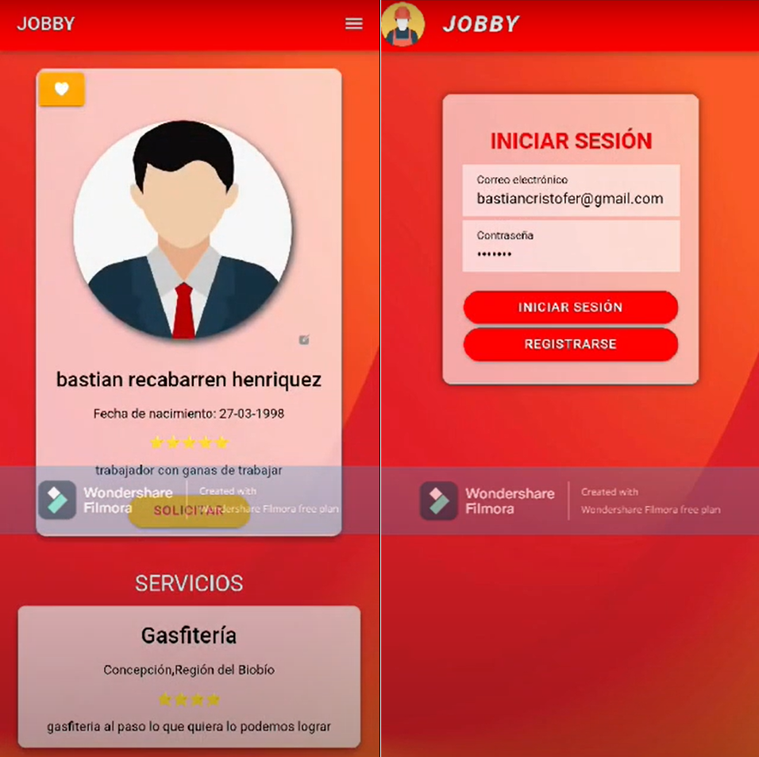

Moisés Aceitón Villegas
Ingeniero Informatico
Egresado de la carrera Ingeniería en Informática del Instituto Profesional Duoc UC con especial
interés en el área de desarrollo web, móvil y el área de inteligencia artificial, destacando por mi
capacidad de análisis y resolución de diversos problemas aplicando la tecnología. Apasionado de la
informática y la tecnología. Aprendo muy rápido y me adapto bien a los distintos entornos de trabajo
ya sea grupales o de forma individual, remoto o presencial.

App Movil: Jobby
Jobby fue mi proyecto portafolio de titulo, el cual consistio en la planeación, diseño y desarrollo de una app movil que solucionara una problematica o una falencia
que estuviese presente en la actualidad, en la cual con mi grupo nos percatamos que existe falta de promoción a la mano de obra independiente. Por lo que mediante una
aplicación movil desarrollada con Ionic y Angular, para la base de datos utilizamos My sql y NodeJs para crear una API la cual fue encargada del almacenamiento y transacción
de los datos, GitHub para el control de versiones de la app y finalmente JiraSoftware nos ayudo a la planificación y asignación de tareas. La aplicación contaba con
distintas funcionalidades tales como: Creación y edición de perfiles de usuario, Posteo de publicaciónes con o sin imagenes, busqueda de publicaciones con distintos filtros,
sistema de registro y seguimiento de solicitudes de trabajo, reseñas y calificación de usuarios, guardado de usuarios favoritos y cambio en la disponibilidad de un perfil.
Registro y control de ordenes de trabajo
Este sistema fue el inicio de un proyecto de digitalización de datos y procesos de una corporación, para desarrollar este sistema se realizaron diversas entrevistas
para la captura de requisitos, el sistema fue desarrollado en la plataforma de Google Appscript, por el limitado tiempo se opto por usar de base datos GoogleSheets
aprovechando las capacidades de la paltaforma. Tambien uno de los apartados del sistema permite generar documentos en formato PDF a modo de boleta con los datos internos
de la orden de trabajo.